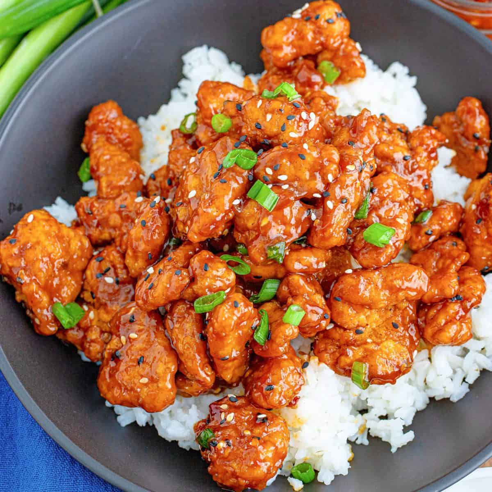
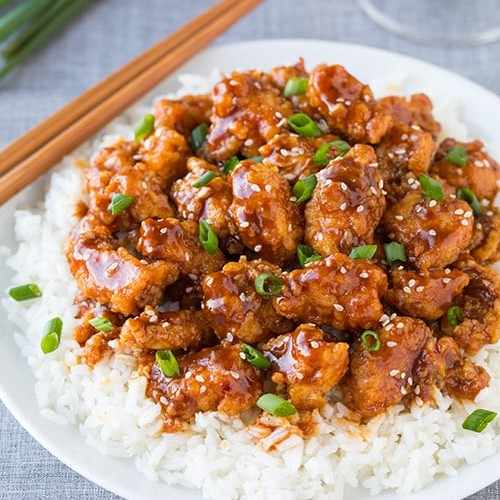

General Tao Chicken?

Description
General Tso? General Tso's? General Tao? General Joe? General's?
General Tsao's? Who's Chicken? It's a bit difficult to say. The dish has existed in
the public consciousness for some time, but what the dish lacks in an exact origin point
point, with several stories as to its birth, it more than certainly makes up for in its texture & sauce punches.
The name has an ironic aspect to it - despite its name being derived from Qing dynasty statesman and military leader
Zuo Zongtang (1812-1885), he actually could not have possibly known about the dish, as it was invented some 70 or so years after his time.
Add the stark (and perhaps not too important to most) revelation(s) of multiple restaurants and their chefs' individual claims of the dish's birth residing with them,
and you've got not only an eat with an intriguing past, but one story of many chronicling a parallel between cultures.

It's a name about as well-known in the international culinary world as it is outside of it - but
it may be surprising to you to know that it's virtually unknown in the region from which it is associated with, Hunan, and by extension, native China by large.
Ironically enough, the dish's compositional flavor is actually not among the palate of the region, the native location of the chef(s) who claim to
its invention - regardless, its standard issue recipe makes it highly variable among any cook, be it a hot-sour preference or sweet & spicy!... or just one preference - and the chicken itself
can be fried or simply smothered in the sauce to your liking, as many iterations have done! That probably explains the many smaller differences on the name itself.
This dish uses not only relies on the larger ingredients themselves, but a sauce to provide that flavor. Light history lesson aside - time to get to work, thanks to
this AllRecipe article's take on the meal.
As always, the total time for preparation will likely vary based on your individual environment - for each section of time,
preparation time may take around 25 minutes, actual cooking may take around 25 minutes, and total time may take around 50 minutes,
for a total serving amount of 6. This recipe has more needed ingredients than the others, but they are easy to come across - in fact, you might
already have most, if not all of them in your kitchen. Time to get a large saucepan, containers, and bowls for this one. Some ingredients will
be used for both the chicken and sauce, in different portions, so keep this in mind - keep these ingredients nearby to use them again.
Ingredients: Chicken
- 4 cups vegetable oil4 cups vegetable oil
- 1 large egg
- 1 & 1/2 skinless, boneless chicken thighs - cut into 1 & 1/2 pieces(or another preferable size!)
- 1 teaspoon salt
- 1 teaspoon white sugar
- 1 pinch of white pepper
- 1 cup of cornstarch
Ingredients: Sauce
- 2 tablespoon vegetable oil
- 3 tablespoons chopped green onion
- 1 clove garlic - minced
- 6 dried whole red chilies
- 1 strip orange zest
- 1/2 cup of white sugar
- 1/4 cup of soy sauce
- 3 tablespoons chicken broth
- 2 tablespoons peanut oil
- 1 tablespoon rice vinegar
- 2 tablespoons sesame oil
- 1/4 teaspoon ground ginger
- 2 teaspoon cornstarch
- 1/4 cup water
Steps: Remember the ingredients and portions of ingredients for both
- Heat the 4 cups of vegetable oil in a steep saucepan to 375 degrees Fahrenheit (190 Degress Celsius).
- In a mixing bowl, whisk the large egg.
- Add the chicken, teaspoon of salt, teaspoon of sugar, and pinch of pepper into said bowl: mixing well (a rubber spatula is ideal for this). then gradually - not instantly - pour the cup of cornstarch until the chicken is uniformly coated.
- Carefully drop small batches of the chicken at a time into the then heated oil. Fry until golden brown -
an about 3 minute process per batch. Remove and transfer to a plate.
Repeat for all batches (a small handful of pieces at a time).
- Repeat step 4 - refry the chicken, starting with the first fried batch - a 2 minute process per batch. Take a plate and paper towel,
line said towel with the plate and place each batch on the plate to drain. Do this for all batches until all batches are drained.
- It's time to start preparing the sauce! Heat the 2 tablespoons of vegetable oil in a wok or large skillet - over high heat. Add the chopped green onion, garlic, whole chiles,
and orange zest. Stir until garlic is golden and chiles brighten - a 1 to 2 minute process.
- Add the 1/2 cup of white sugar, 3 tablespoons of chicken broth, 2 tablespoons of peanut oil, 1 tablespoon of rice vinegar, 2 tablespoons of sesame oil,
1/4 teaspoon of ground ginger, and add them to the same wok/skillet. Cook until boiling - a 3 minute process.
- Take 2 teaspoons of cornstarch and stir in water until dissolved. Pour into the sauce and stir until the sauce thickens and is no longer cloudy from the cornstarch - an about 1 minute process. The last two steps up to this point
have been fairly quick - the process is almost done.
- It's time to get the sauce into the chicken - take the drained chicken from the paper towel-lined plate and stir it into the sauce. Reduce the heat to low, and...
- ...cook until the chicken is heated through from and has absorbed some of the sauce, giving it a shiny, almost sticky appearance and consistency respectively - an about 3 minute process!
11. Enjoy and savor!
Gallery: View other GTCs here!